Try drawing this simple sketch
Watch this brief video demonstration and follow these steps to learn how to draw this simple sketch. You will add relationships and dimensions.
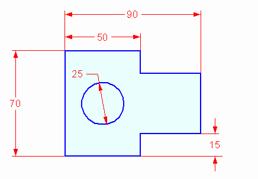
These instructions show images of a synchronous sketch, but the steps to draw an ordered sketch are very similar. Familiarize yourself with the information in Draw an ordered sketch of a part, and then continue with these instructions.
For information about the differences between synchronous and ordered sketches, see Synchronous and ordered sketches.
Draw the sketch geometry
On the File menu, click→New→New.
From the Standard Templates list, choose ISO Metric, and then choose ISO Metric Part.
In synchronous mode, choose the Sketching tab→Draw group→Line command .
Note:In ordered mode, the Line command is located on the Home tab→Sketch group.
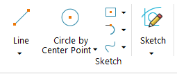
In an ordered sketch, you must first click the XZ base reference plane in the center of the window. This opens the sketch environment, where you can continue with the Line command.
The line command requires two points to create a line.
Position the cursor as shown, and then click to place the first point of the line.
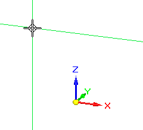
Notice the alignment lines connected to the cursor. These lines assist you in aligning sketch geometry.
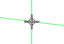
When a line alignment is horizontal, you see the horizontal indicator.
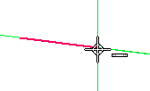
When a line alignment is vertical, you see the vertical indicator.
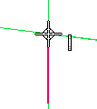
When you are at the endpoint of another line you see the endpoint indicator.
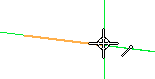
Note:For this activity, the images do not show the edit control handles (1) attached to the sketch elements.
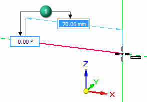
Draw eight connected lines to form the basic shape shown. Be sure to make all of the lines horizontal or vertical, but do not worry about the line lengths at this time.
When you are finished drawing the lines, press Esc to exit the command.
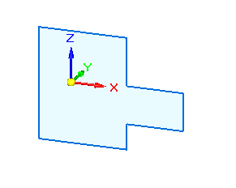
In PathFinder, click the Base Show/Hide button (1) to turn off the display of coordinate systems.
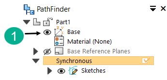
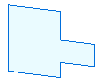
Draw a circle.
On the Sketching tab→Draw group, choose the Circle by Center Point command .
Locate the origin point on the base coordinate system as shown, and click to place the center point of the circle.
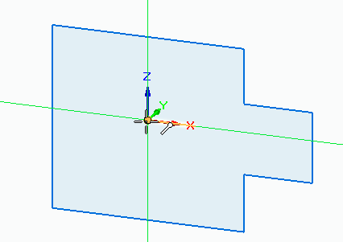
Click again when the circle is the approximate size shown. Press Esc to end the command.
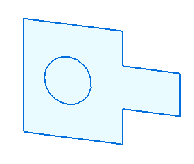
Place relationships on the sketch geometry
IntelliSketch automatically applies sketch relationships as you sketch, but sometimes you need to apply relationships manually; that’s what the commands in the Relate group are for. These commands require a special workflow. After selecting the relationship that you want to use, you select the sketch entity that you want to move, and then you select the entity to remain stationary.
On the Sketching tab→Relate group, choose the Horizontal/Vertical command .
Click midpoint (2) and then click midpoint (1). Make sure you get the midpoint indicator before clicking.
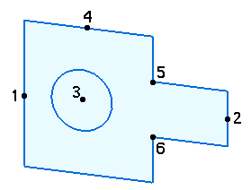
This aligns midpoint (2) with midpoint (1).
Align circle center (3) with midpoint (1). Make sure you get the center point indicator before clicking.
Align circle center (3) with midpoint (4). Make sure you get the center point indicator before clicking.
Align point (5) with point (6).
Place sketch dimensions
To place dimensions:
Click to identify the element to dimension.
Click to identify the location of the dimension.
Enter the dimension value.
The numbers denote the location you click to add the dimensions to the sketch elements.
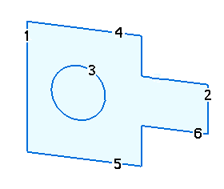
On the Sketching tab→Dimension group, choose Smart Dimension .
Use the Smart Dimension command to place the following dimensions:
Add a diameter dimension to the circle by clicking at (3).
In the dimension value edit box, type 25 and press Enter.
Add a length dimension on line (4) by clicking at (4).
In the dimension value edit box, type 50 and press Enter.
Dimension line (1) by clicking at (1).
In the dimension value edit box, type 70 and press Enter.
Press Esc to end the command.
On the Sketching tab→Dimension group, choose Distance Between .
Dimension the distance between line (1) and line (2) by clicking line (1) and then line (2).
In the dimension value edit box, enter 90.
Right-click to restart the dimension command.
Dimension the distance between line (5) and line (6) by clicking line (5) and then line (6).
In the dimension value edit box, enter 15.
Press Esc to end the command.
Note:To finish an ordered sketch, click Close Sketch in the graphics window, and then on the Sketch command bar click Finish.
The sketch is complete.
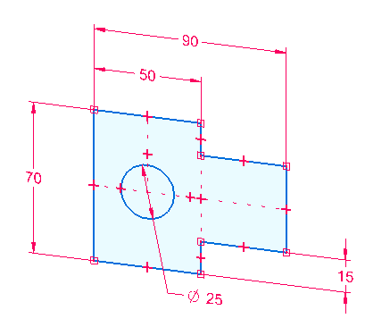
(Optional) Turn off the relationship handles.
On the Sketching tab→Relate group, choose the Relationship Handles command.
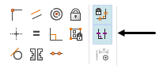
How do I
Draw a synchronous sketchDraw an ordered sketch of a part
Draw an assembly layout